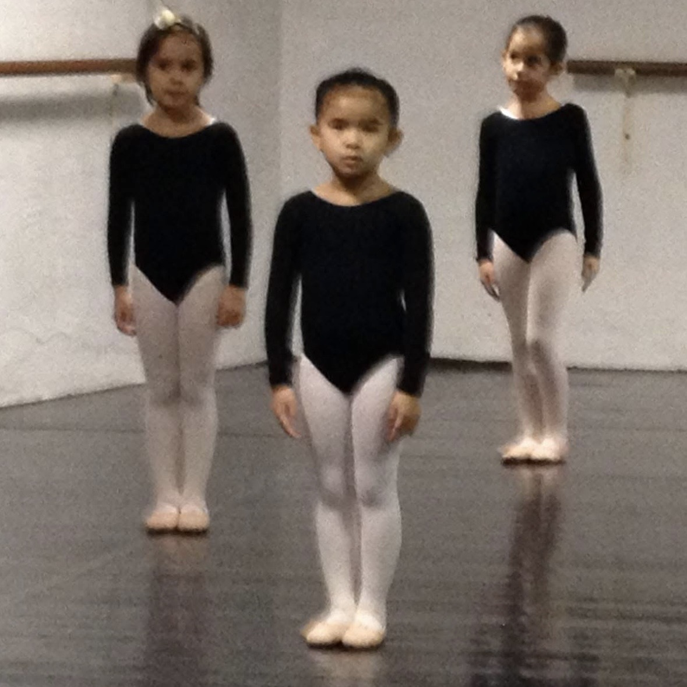
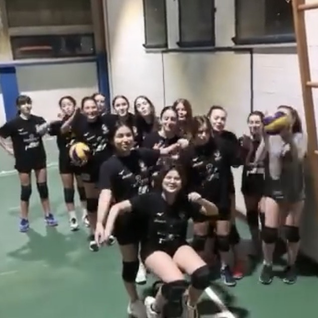

Quali sport ho praticato?
Adesso non faccio nessuno sport ma voglio iniziare ad andare in palestra. Prima ho praticato:
| Sport | Foto prova | A quanti anni ho iniziato e per quanto l'ho fatto | Voto e valutazione |
|---|---|---|---|
| Danza |
 |
Ho iniziato a 2 anni e mezzo e l'ho fatto per 3 anni | 6 su 10; mi piaceva ma non mi ricordo quasi niente |
| Nuoto | Non ce l'ho | Ho iniziato 6 anni e l'ho fatto per 3 anni | 5 su 10; non mi piaceva ma non mi dispiaceva andare in piscina anche in inverno |
| Pallavolo |
 |
Ho iniziato 11 anni e l'ho fatto per 3 anni | 8 su 10; come sport non mi piaceva perchè ero negata ma amavo stare con le mie compagne di squadra |
(come avrete notato non duro più di 3 anni nel fare uno sport)